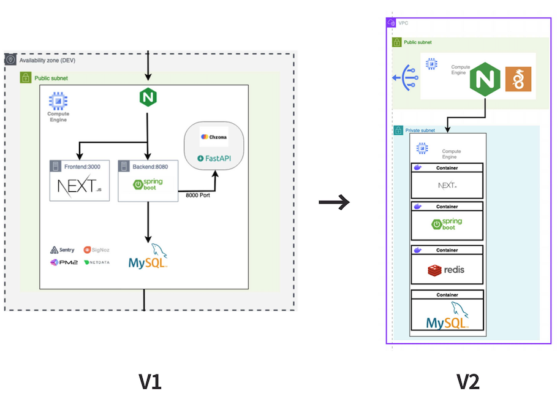

Detection
Netdata alert via Discord — 100% bad requests, attacker probing for .env files.

Discord alert from Netdata

Nginx logs — .env probe attempts
Resolution
Migrated all services to Private Subnet + WireGuard VPN. Only Nginx remained public-facing.

Result
Attack surface eliminated — zero scanning incidents after migration.